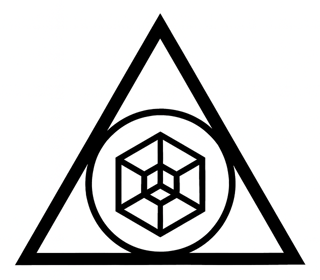

<title>darkwinter Mark Lab</title>
<link rel="preconnect" href="https://fonts.googleapis.com">
<link rel="preconnect" href="https://fonts.gstatic.com" crossorigin>
<link rel="stylesheet" href="https://fonts.googleapis.com/css2?family=Orbitron:wght@500;700&family=Jost:wght@400;500&family=Share+Tech+Mono&display=swap">
<style>
  /* Layout: a lab bench. One large live 3D stage with an era dial, then the flat-mark comparison underneath.
     Quiet dark chrome; the stage carries each era's palette. */
  :root {
    --bg: #0c0a10; --panel: #15121b; --line: #2b2634; --fg: #ece8f2; --muted: #a39bb2; --accent: #ff2e88;
    --display: 'Orbitron', 'Arial Black', system-ui, sans-serif;
    --body: 'Jost', 'Futura', system-ui, sans-serif;
    --mono: 'Share Tech Mono', ui-monospace, Menlo, Consolas, monospace;
    color-scheme: dark;
  }
  html, body { background: var(--bg); color: var(--fg); }
  body { font: 400 16px/1.55 var(--body); }
  main { max-width: 1180px; margin: 0 auto; padding-inline: 20px; padding-block: 36px 72px; display: grid; gap: 48px; }
  :focus-visible { outline: 2px solid var(--accent); outline-offset: 3px; }
  .eyebrow { font: 13px/1.3 var(--mono); letter-spacing: .14em; text-transform: uppercase; color: var(--muted); }
  h1 { font: 700 clamp(28px, 5.5vw, 54px)/1.04 var(--display); margin: 6px 0 12px; text-wrap: balance; }
  h1 em { font-style: normal; color: var(--accent); }
  h2 { font: 700 clamp(20px, 3vw, 28px)/1.15 var(--display); margin: 0 0 6px; text-wrap: balance; }
  .lede { font-size: 18px; max-width: 66ch; color: #d9d3e3; margin: 0; }

  .lab { display: grid; grid-template-columns: minmax(0, 1fr) minmax(0, 320px); gap: 24px; align-items: start; }
  @media (max-width: 860px) { .lab { grid-template-columns: minmax(0, 1fr); } }
  .stage { position: relative; aspect-ratio: 1 / 1; max-width: 100%; border: 1px solid var(--line); overflow: hidden; background: #000; touch-action: none; }
  .stage canvas { position: absolute; inset: 0; width: 100% !important; height: 100% !important; display: block; }
  .ov { position: absolute; inset: 0; pointer-events: none; }
  .hud { position: absolute; left: 14px; right: 14px; bottom: 12px; display: flex; justify-content: space-between; gap: 12px; font: 12px var(--mono); letter-spacing: .1em; pointer-events: none; text-transform: uppercase; }
  .hud.top { top: 12px; bottom: auto; }

  .panel { display: grid; gap: 18px; }
  .eras { display: grid; grid-template-columns: repeat(2, minmax(0, 1fr)); gap: 6px; }
  .eras button { text-align: left; background: var(--panel); color: var(--fg); border: 1px solid var(--line); padding: 9px 10px; cursor: pointer; font: 13px/1.2 var(--mono); display: flex; gap: 8px; align-items: center; }
  .eras button i { width: 10px; height: 10px; border-radius: 50%; flex: none; }
  .eras button:hover { border-color: var(--muted); }
  .eras .gh { grid-column: 1 / -1; font: 12px var(--mono); letter-spacing: .12em; text-transform: uppercase; color: var(--muted); margin-top: 8px; }
  .eras .gh:first-child { margin-top: 0; }
  .eras button[aria-pressed="true"] { border-color: var(--accent); box-shadow: inset 3px 0 0 var(--accent); }
  .ctrl { display: flex; flex-wrap: wrap; gap: 6px; }
  .ctrl button { background: transparent; color: var(--fg); border: 1px solid var(--line); padding: 8px 12px; font: 13px var(--mono); cursor: pointer; }
  .ctrl button:hover { border-color: var(--muted); }
  .ctrl button[aria-pressed="true"] { background: var(--fg); color: var(--bg); }
  .card { background: var(--panel); border: 1px solid var(--line); padding: 16px; display: grid; gap: 6px; }
  .card b { font: 500 18px/1.3 var(--body); }
  .card p { margin: 0; color: #d4cede; font-size: 15px; }
  .hint { font-size: 13px; color: var(--muted); margin: 0; }

  .why { display: grid; grid-template-columns: repeat(auto-fit, minmax(240px, 1fr)); gap: 1px; background: var(--line); border: 1px solid var(--line); }
  .why div { background: var(--panel); padding: 16px 18px; }
  .why b { display: block; font: 12px var(--mono); letter-spacing: .12em; text-transform: uppercase; color: var(--muted); margin-bottom: 4px; font-weight: 400; }

  .marks { display: grid; grid-template-columns: repeat(auto-fit, minmax(230px, 1fr)); gap: 16px; }
  .mk { display: grid; gap: 10px; align-content: start; }
  .mk .tile { aspect-ratio: 1 / 1; max-width: 100%; display: grid; place-items: center; border: 1px solid var(--line); }
  .mk .tile img, .mk .tile svg { width: 78%; height: auto; display: block; }
  .mk h3 { margin: 0; font: 500 16px var(--body); }
  .mk p { margin: 0; font-size: 14px; color: var(--muted); }
  .sizes { display: flex; flex-wrap: wrap; align-items: end; gap: 22px; padding: 18px; border: 1px solid var(--line); background: #f4f2ee; color: #111; }
  .sizes.dark { background: #0b0612; color: #eee; }
  .sizes figure { margin: 0; display: grid; gap: 6px; justify-items: center; font: 11px var(--mono); }
  ul.changes { margin: 0; padding-left: 20px; display: grid; gap: 6px; max-width: 75ch; color: #d4cede; }
</style>

<main>
  <header>
    <div class="eyebrow">darkwinter.ai · mark lab · v1</div>
    <h1>The mark, <em>in four dimensions</em></h1>
    <p class="lede">The cube at the centre of the current logo is drawn like a hypercube: a cube inside a cube, corners joined. Here it becomes a real one, a four-dimensional cube rotating through itself, held by the circle and the triangle. At rest it settles back into the flat mark. Drag to orbit, then pick an era.</p>
  </header>

  <section class="lab" aria-label="3D mark">
    <div>
      <div class="stage" id="stage">
        <div class="ov" id="bgov"></div>
        <div class="ov" id="fxov"></div>
        <div class="hud top" id="hudTop"><span id="hudL">TX-00</span><span id="hudR">darkwinter.ai</span></div>
        <div class="hud" id="hudBot"><span id="hudLine">intelligence for uncertain times</span><span id="hudState">LIVE</span></div>
      </div>
    </div>
    <div class="panel">
      <div><div class="eyebrow" style="margin-bottom:8px">Era</div><div class="eras" id="eras"></div></div>
      <div class="ctrl">
        <button id="b-sound" aria-pressed="false">Sound off</button>
        <button id="b-rest" aria-pressed="false">Rest pose</button>
        <button id="b-spin" aria-pressed="true">Hypercube spin</button>
        <button id="b-replay">Replay build</button>
      </div>
      <div class="card"><span class="eyebrow" id="c-era">00 · Mark</span><b id="c-line"></b><p id="c-desc"></p><p id="c-sound" style="color:var(--muted);font-size:14px"></p></div>
      <p class="hint" id="snd-status" aria-live="polite"></p>
      <p class="hint" id="hint">Turn sound on to hear each era boot, ignite and hum. Drag to orbit. Rest pose turns the camera square-on and stops the 4D rotation, so you can compare it with the flat mark.</p>
    </div>
  </section>

  <section>
    <h2>Why a hypercube</h2>
    <div class="why">
      <div><b>It's already in the mark</b>The current logo draws a cube inside a cube with the corners joined. That is the standard picture of a tesseract, so the upgrade adds motion, not a new idea.</div>
      <div><b>A system seen whole</b>A cube is a system. A hypercube is a system you can see from every side at once, which is the promise of an AI operating system for a founder.</div>
      <div><b>Motion without a new logo</b>Still, it's the flat mark people already know. In motion, the inner cube turns inside out through the outer one. Every era skin keeps that silhouette.</div>
    </div>
  </section>

  <section style="display:grid;gap:20px">
    <div><h2>Flat mark: current and proposed refinement</h2><p class="hint">The refinement is drawn from the same geometry as the 3D model, so print, screen and motion stay identical.</p></div>
    <div class="marks">
      <div class="mk"><div class="tile" style="background:#fff"></div><h3>Current</h3><p>As supplied. Heavy triangle, lighter circle and cube.</p></div>
      <div class="mk"><div class="tile" style="background:#fff" id="m-refined"></div><h3>Refined</h3><p>The circle is a true incircle touching all three sides; stroke weights are tuned to read as one weight.</p></div>
      <div class="mk"><div class="tile" style="background:#0b0612" id="m-reverse"></div><h3>Reversed</h3><p>The same mark on Void for screens, with the core lit in Neon Pink.</p></div>
      <div class="mk"><div class="tile" style="background:#f4f2ee" id="m-small"></div><h3>Small-size cut</h3><p>Below 32px the inner cube fills in, so this cut drops it and keeps one bold cube outline.</p></div>
    </div>
    <div class="sizes" id="sizes-light"></div>
    <div class="sizes dark" id="sizes-dark"></div>
    <ul class="changes">
      <li><b>Geometry:</b> the circle becomes the triangle's incircle, touching all three inner edges, and the cube sits on the same centre. In the current file the circle floats slightly off the sides.</li>
      <li><b>Weight:</b> the triangle stroke drops from about 3× to 2× the inner strokes, so the cube no longer looks faint next to the frame.</li>
      <li><b>Corners:</b> slightly rounded inner joins keep the apex from filling in at small sizes.</li>
      <li><b>The cube:</b> it's drawn as a true projection of the 4D model, so the rest frame of every animation lines up with the logo exactly.</li>
    </ul>
    <p class="hint">These are proposals drawn in code from your PNG, not from the original SVG. Send the SVG and I'll match its exact proportions and export production files.</p>
  </section>
</main>

<script src="https://cdn.jsdelivr.net/npm/tone@15.1.22/build/Tone.js"></script>
<script type="importmap">
{ "imports": {
  "three": "https://cdn.jsdelivr.net/npm/three@0.186.1/build/three.module.js",
  "three/addons/": "https://cdn.jsdelivr.net/npm/three@0.186.1/examples/jsm/"
} }
</script>
<script type="module">
import * as THREE from 'three';
import { OrbitControls } from 'three/addons/controls/OrbitControls.js';
import { EffectComposer } from 'three/addons/postprocessing/EffectComposer.js';
import { RenderPass } from 'three/addons/postprocessing/RenderPass.js';
import { UnrealBloomPass } from 'three/addons/postprocessing/UnrealBloomPass.js';
import { OutputPass } from 'three/addons/postprocessing/OutputPass.js';
import { LineSegments2 } from 'three/addons/lines/LineSegments2.js';
import { LineSegmentsGeometry } from 'three/addons/lines/LineSegmentsGeometry.js';
import { LineMaterial } from 'three/addons/lines/LineMaterial.js';
import { RoomEnvironment } from 'three/addons/environments/RoomEnvironment.js';

/* ---------- shared geometry (also used for the flat SVG marks) ---------- */
const S3 = Math.sqrt(3);
const G = { T: 0.085, ringW: 0.032, tessW: 0.026, hex: 0.25, D4: 2 };   // circumradius 1
G.ringR = 0.5 - G.T - G.ringW / 2;                                       // incircle, tangent to the inner edges
const triPts = r => [[0, r], [-S3 / 2 * r, -r / 2], [S3 / 2 * r, -r / 2]];
const V4 = []; for (let i = 0; i < 16; i++) V4.push([i & 1 ? 1 : -1, i & 2 ? 1 : -1, i & 4 ? 1 : -1, i & 8 ? 1 : -1]);
const E4 = []; for (let i = 0; i < 16; i++) for (let b = 0; b < 4; b++) { const j = i ^ (1 << b); if (i < j) E4.push([i, j]); }
const qIso = (() => { const q = new THREE.Quaternion().setFromUnitVectors(new THREE.Vector3(1, 1, 1).normalize(), new THREE.Vector3(0, 0, 1));
  const p = new THREE.Vector3(1, 1, -1).applyQuaternion(q); const roll = Math.PI / 2 - Math.atan2(p.y, p.x);
  return new THREE.Quaternion().setFromAxisAngle(new THREE.Vector3(0, 0, 1), roll).multiply(q); })();
function project(a, b, out) {           // 4D rotate (XW by a, ZW by b) → perspective in w → 3D, scaled to the hex radius
  const s = G.hex / Math.SQRT2, ca = Math.cos(a), sa = Math.sin(a), cb = Math.cos(b), sb = Math.sin(b);
  return V4.map(([x, y, z, w], i) => {
    let x1 = x * ca - w * sa, w1 = x * sa + w * ca; let z1 = z * cb - w1 * sb, w2 = z * sb + w1 * cb;
    const k = 1 / (G.D4 + w2) * s; return [x1 * k, y * k, z1 * k];
  });
}

/* ---------- flat marks (SVG) ---------- */
function svgMark({ ink = '#111', core = null, small = false, size = null } = {}) {
  const P = project(0, 0).map(v => new THREE.Vector3(...v).applyQuaternion(qIso));
  const f = v => `${(v[0]).toFixed(4)} ${(-v[1]).toFixed(4)}`;
  const outer = triPts(1), inner = triPts(1 - 2 * G.T);
  let d = `M${outer.map(f).join(' L')} Z M${[inner[0], inner[2], inner[1]].map(f).join(' L')} Z`;
  let lines = '';
  if (small) {
    const hx = [0, 1, 2, 3, 4, 5].map(k => { const a = Math.PI / 2 + k * Math.PI / 3; return [Math.cos(a) * G.hex * 1.02, Math.sin(a) * G.hex * 1.02]; });
    lines = `<path d="M${hx.map(f).join(' L')} Z M0 0 L${f(hx[0])} M0 0 L${f(hx[2])} M0 0 L${f(hx[4])}" fill="none" stroke="${ink}" stroke-width="${G.tessW * 1.9}" stroke-linejoin="round" stroke-linecap="round"/>`;
  } else {
    const seg = E4.map(([i, j]) => `M${f([P[i].x, P[i].y])} L${f([P[j].x, P[j].y])}`).join(' ');
    lines = `<path d="${seg}" fill="none" stroke="${ink}" stroke-width="${G.tessW}" stroke-linecap="round"/>`;
  }
  const coreDot = core ? `<circle cx="0" cy="0" r="0.035" fill="${core}"/>` : '';
  const sz = size ? `width="${size}" height="${size}"` : '';
  return `<svg ${sz} viewBox="-1.02 -1.08 2.04 2.04" xmlns="http://www.w3.org/2000/svg" role="img" aria-label="darkwinter mark">
    <path d="${d}" fill="${ink}" fill-rule="evenodd" stroke="${ink}" stroke-width="0.012" stroke-linejoin="round"/>
    <circle cx="0" cy="${(0).toFixed(3)}" r="${G.ringR}" fill="none" stroke="${ink}" stroke-width="${small ? G.ringW * 1.6 : G.ringW}"/>${lines}${coreDot}</svg>`;
}
document.getElementById('m-refined').innerHTML = svgMark({});
document.getElementById('m-reverse').innerHTML = svgMark({ ink: '#f4f1f8', core: '#ff2e88' });
document.getElementById('m-small').innerHTML = svgMark({ small: true });
for (const [id, ink] of [['sizes-light', '#111'], ['sizes-dark', '#f4f1f8']])
  document.getElementById(id).innerHTML = [128, 64, 32, 24, 16].map(s => `<figure>${svgMark({ ink, small: s <= 32, size: s })}<figcaption>${s}px${s <= 32 ? ' · small cut' : ''}</figcaption></figure>`).join('');


/* ---------- sound: one kit per era, built with Tone.js, synced to the visual build ---------- */
const KITS = {
  '00': { lead: 'sine', pad: 'sine', scale: ['D5','F5','A5','C6','E6'], chord: ['D4','A4','E5','F5'], bass: 'D2', click: 'tick', kick: false, rev: 1.8, revWet: .2, dly: 0, drone: ['D3','A3'], droneVol: -30 },
  '01': { lead: 'sawtooth', pad: 'sawtooth', scale: ['D5','F5','A5','C6','D6'], chord: ['D3','A3','F4','A4','D5'], bass: 'D1', click: 'noise', kick: true, rev: 4, revWet: .35, dly: .375, drone: ['D2','A2','F3'], droneVol: -27, cutoff: 1400 },
  '02': { lead: 'square', pad: 'triangle', scale: ['A5','C6','E6','A6','C7'], chord: ['A3','E4','C5','E5'], bass: 'A1', click: 'metal', kick: false, rev: 1.5, revWet: .2, dly: .12, drone: ['A2','E3'], droneVol: -28, wobble: true, beep: true, cutoff: 1800 },
  '03': { lead: 'fm', pad: 'triangle', scale: ['F5','A5','C6','D6','F6'], chord: ['F3','C4','A4','C5','F5'], bass: 'F1', click: 'metal', kick: true, rev: 2.6, revWet: .3, dly: 0, drone: ['F2','C3'], droneVol: -31, theremin: true },
  '04': { lead: 'square', pad: 'square', scale: ['E5','G5','B5','E6','G6'], chord: ['E3','B3','G4','B4'], bass: 'E1', click: 'tick', kick: false, rev: 1.2, revWet: .12, dly: .5, drone: ['E2'], droneVol: -32, ping: true, cutoff: 1100 },
  '05': { lead: 'sawtooth', pad: 'sawtooth', scale: ['C5','Eb5','G5','Bb5','C6'], chord: ['C3','G3','Eb4','Bb4','D5'], bass: 'C1', click: 'noise', kick: true, rev: 6, revWet: .45, dly: .5, drone: ['C2','G2'], droneVol: -28, rain: true, buzz: true, cutoff: 900 },
  '06': { lead: 'sine', pad: 'fatsine', scale: ['G5','B5','D6','E6','G6'], chord: ['G3','D4','B4','E5','G5'], bass: 'G1', click: null, kick: false, rev: 5, revWet: .45, dly: 0, drone: ['G2','D3','B3'], droneVol: -23, cutoff: 2200 },
  '08': { lead: 'sawtooth', pad: 'sawtooth', scale: ['C4','Eb4','G4','Bb4','C5'], chord: ['C2','G2','C3','Eb3','G3'], bass: 'C1', click: null, kick: true, rev: 6, revWet: .4, dly: 0, drone: ['C1','G1'], droneVol: -24, cutoff: 700, braam: true, rain: true },
  '09': { lead: 'sine', pad: 'sine', scale: ['A4','C5','E5','A5','B5'], chord: ['A2','E3','A3','C4','E4','B4'], bass: 'A1', click: 'tick', kick: false, rev: 7, revWet: .5, dly: 0, drone: ['A1','E2','A2'], droneVol: -24, cutoff: 1600, ticks: 1.2 },
  '10': { lead: 'fm', pad: 'sawtooth', scale: ['E4','F4','G#4','A4','B4'], chord: ['E2','B2','E3','F3'], bass: 'E1', click: null, kick: true, rev: 3.5, revWet: .3, dly: 0, drone: ['E1','B1'], droneVol: -22, cutoff: 600, wind: true },
  '11': { lead: 'fm', pad: 'sine', scale: ['D3','A3','C4','E4','F4'], chord: ['D2','A2','F3','C4'], bass: 'D1', click: null, kick: false, rev: 5, revWet: .45, dly: 0, drone: ['D1','A1'], droneVol: -24, cutoff: 500, theremin: true, wind: true },
  '12': { lead: 'triangle', pad: 'fatsawtooth', scale: ['E5','G#5','B5','D#6','F#6'], chord: ['E3','B3','D#4','G#4','F#5'], bass: 'E2', click: 'tick', kick: false, rev: 6, revWet: .5, dly: .33, drone: ['E2','B2','F3'], droneVol: -22, cutoff: 2600, wobble: true },
  '13': { lead: 'sine', pad: 'sine', scale: ['C5','E5','G5','B5','D6'], chord: ['C3','G3','E4','B4','D5'], bass: 'C2', click: 'tick', kick: false, rev: 2.5, revWet: .25, dly: .25, drone: ['C3','G3'], droneVol: -32, cutoff: 2400 },
  '07': { lead: 'triangle', pad: 'triangle', scale: ['C5','D5','G5','A5','C6'], chord: ['C4','G4','D5','A5'], bass: 'C2', click: 'pencil', kick: false, rev: 1.4, revWet: .15, dly: 0, drone: ['C3'], droneVol: -34 },
};
const audio = (() => {
  const T = window.Tone; let on = false, kit = null, cur = null;
  const btn = document.getElementById('b-sound');
  function makeKit(k) {
    const nodes = [], N = x => (nodes.push(x), x);
    const out = N(new T.Gain(.9)).toDestination();
    const rev = N(new T.Reverb({ decay: k.rev, wet: k.revWet })).connect(out);
    let bus = rev;
    if (k.dly) { const d = N(new T.PingPongDelay(k.dly, .35)); d.wet.value = .28; d.connect(rev); bus = d; }
    if (k.wobble) { const v = N(new T.Vibrato(5.5, .12)); v.connect(bus); bus = v; }
    const lead = k.lead === 'fm'
      ? N(new T.PolySynth(T.FMSynth, { harmonicity: 2, modulationIndex: 6, envelope: { attack: .01, decay: .25, sustain: .2, release: .6 }, volume: -16 })).connect(bus)
      : N(new T.PolySynth(T.Synth, { oscillator: { type: k.lead }, envelope: { attack: .005, decay: .18, sustain: .15, release: .4 }, volume: -18 })).connect(bus);
    const filt = N(new T.Filter(k.cutoff || 3000, 'lowpass')).connect(bus);
    const pad = N(new T.PolySynth(T.Synth, { oscillator: { type: k.pad }, envelope: { attack: .6, decay: .5, sustain: .8, release: 2.5 }, volume: -20 })).connect(filt);
    const bell = N(new T.FMSynth({ harmonicity: 3.01, modulationIndex: 12, envelope: { attack: .001, decay: 1.6, sustain: 0, release: 1.6 }, volume: -20 })).connect(rev);
    const kick = k.kick ? N(new T.MembraneSynth({ pitchDecay: .05, octaves: 6, envelope: { attack: .001, decay: .5, sustain: 0 }, volume: -8 })).connect(out) : null;
    const riserF = N(new T.Filter(300, 'bandpass', -24)).connect(rev); riserF.Q.value = 2;
    const riser = N(new T.NoiseSynth({ noise: { type: 'pink' }, envelope: { attack: .85, decay: .05, sustain: 0, release: .1 }, volume: -18 })).connect(riserF);
    let click = null;
    if (k.click === 'metal') click = N(new T.MetalSynth({ envelope: { attack: .001, decay: .06, release: .02 }, harmonicity: 5.1, resonance: 4000, volume: -28 })).connect(bus);
    else if (k.click === 'noise') click = N(new T.NoiseSynth({ noise: { type: 'white' }, envelope: { attack: .001, decay: .12, sustain: 0 }, volume: -20 })).connect(rev);
    else if (k.click === 'tick') click = N(new T.Synth({ oscillator: { type: 'sine' }, envelope: { attack: .001, decay: .03, sustain: 0, release: .01 }, volume: -16 })).connect(bus);
    else if (k.click === 'pencil') { const hp = N(new T.Filter(2500, 'highpass')).connect(rev); click = N(new T.NoiseSynth({ noise: { type: 'white' }, envelope: { attack: .02, decay: .12, sustain: 0 }, volume: -22 })).connect(hp); }
    const glide = k.theremin ? N(new T.Synth({ oscillator: { type: 'sine' }, portamento: .25, envelope: { attack: .15, decay: .2, sustain: .7, release: .8 }, volume: -16 })) : null;
    if (glide) { const v = N(new T.Vibrato(6, .25)).connect(rev); glide.connect(v); }
    // ambience
    const amb = [];
    const drone = N(new T.PolySynth(T.Synth, { oscillator: { type: k.pad === 'fatsine' ? 'fatsine' : 'triangle' }, envelope: { attack: 2.5, decay: 1, sustain: 1, release: 2.5 }, volume: k.droneVol })).connect(filt);
    const lfo = N(new T.LFO(.07, (k.cutoff || 3000) * .4, (k.cutoff || 3000))).connect(filt.frequency);
    let rain = null, buzz = null;
    if (k.rain) { const rf = N(new T.Filter(1800, 'highpass')).connect(out); rain = N(new T.Noise({ type: 'pink', volume: -34 })).connect(rf); }
    if (k.buzz) { const bf = N(new T.Filter(500, 'lowpass')).connect(out); buzz = N(new T.Oscillator({ frequency: 60, type: 'sawtooth', volume: -40 })).connect(bf); }
    let braam = null, loop = null, wind = null;
    if (k.braam) { const lp = N(new T.Filter(900, 'lowpass')).connect(rev); const ds = N(new T.Distortion(.35)).connect(lp);
      braam = N(new T.PolySynth(T.Synth, { oscillator: { type: 'fatsawtooth', count: 3, spread: 30 }, envelope: { attack: .08, decay: .4, sustain: .8, release: 2.2 }, volume: -17 })).connect(ds); }
    if (k.ticks) { const tk = N(new T.Synth({ oscillator: { type: 'square' }, envelope: { attack: .001, decay: .02, sustain: 0, release: .01 }, volume: -26 })).connect(rev);
      loop = N(new T.Loop(time => tk.triggerAttackRelease('C7', '64n', time), k.ticks)); }
    if (k.wind) { const wf = N(new T.Filter(500, 'bandpass')).connect(out); wf.Q.value = 1.2; N(new T.LFO(.09, 250, 1400)).connect(wf.frequency).start();
      wind = N(new T.Noise({ type: 'brown', volume: -20 })).connect(wf); }
    const now = () => T.now() + .06;
    const kitApi = {
      build() {
        const t = now(), S = k.scale;
        if (k.click) for (let i = 0; i < 5; i++) {
          const ti = t + i * .045;
          if (k.click === 'tick') click.triggerAttackRelease(S[i % S.length], '64n', ti);
          else if (k.click === 'metal') click.triggerAttackRelease('C6', '64n', ti, .6);
          else click.triggerAttackRelease('32n', ti, .5);
        }
        if (k.beep) [0, .12, .24].forEach(d => lead.triggerAttackRelease('A6', .05, t + .3 + d, .5));
        if (kick) kick.triggerAttackRelease(k.bass, '8n', t + .05);
        S.forEach((n, i) => lead.triggerAttackRelease(n, .12, t + .35 + i * .075, .7));
        riserF.frequency.cancelScheduledValues(t); riserF.frequency.setValueAtTime(300, t + .7); riserF.frequency.exponentialRampToValueAtTime(6000, t + 1.55);
        riser.triggerAttackRelease(.9, t + .7);
        if (glide) { glide.triggerAttack(S[0], t + .7); glide.setNote(S[4], t + 1.2); glide.triggerRelease(t + 1.7); }
        if (kick) kick.triggerAttackRelease(k.bass, '4n', t + 1.45);
        pad.triggerAttackRelease(k.chord, 2.6, t + 1.45, .8);
        if (braam) braam.triggerAttackRelease(k.chord.slice(0, 3), 2.2, t + 1.45, .9);
        bell.triggerAttackRelease(S[S.length - 1], 1.2, t + 1.45, .7);
        if (k.ping) [0, .5, 1].forEach((d, i) => bell.triggerAttackRelease('E6', .4, t + 2.2 + d, .5 / (i + 1)));
      },
      settle() { const t = now(); pad.triggerAttackRelease(k.chord.slice(0, 3), 1.6, t, .5); lead.triggerAttackRelease(k.scale[0], .3, t + .05, .4); },
      start() { drone.triggerAttack(k.drone, now()); lfo.start(); rain?.start(); buzz?.start(); wind?.start(); if (loop) { loop.start(0); if (T.Transport.state !== 'started') T.Transport.start(); } },
      stop() { const t = now(); drone.releaseAll(t); rain?.stop(t + .3); buzz?.stop(t + .3); wind?.stop(t + .3); loop?.stop(); out.gain.rampTo(0, 1.2, t); setTimeout(() => nodes.forEach(n => { try { n.dispose(); } catch {} }), 2600); },
    };
    return kitApi;
  }
  window.__makeKit = makeKit; window.__KITS = KITS;
  function swap(e) { kit?.stop(); kit = makeKit(KITS[e.id]); kit.start(); }
  const status = document.getElementById('snd-status');
  const say = m => { status.textContent = m; };
  // iPhone/iPad route Web Audio through the ringer, so silent mode mutes it. Asking for a "playback"
  // session and starting a silent <audio> element moves the page onto the media channel, like a video.
  let unlockEl = null;
  function silentWav() {
    const n = 4000, b = new Uint8Array(44 + n), v = new DataView(b.buffer), w = (o, str) => [...str].forEach((c, i) => b[o + i] = c.charCodeAt(0));
    w(0, 'RIFF'); v.setUint32(4, 36 + n, true); w(8, 'WAVE'); w(12, 'fmt '); v.setUint32(16, 16, true); v.setUint16(20, 1, true); v.setUint16(22, 1, true);
    v.setUint32(24, 8000, true); v.setUint32(28, 8000, true); v.setUint16(32, 1, true); v.setUint16(34, 8, true); w(36, 'data'); v.setUint32(40, n, true); b.fill(128, 44);
    let bin = ''; b.forEach(x => bin += String.fromCharCode(x)); return 'data:audio/wav;base64,' + btoa(bin);
  }
  function unlockMedia() {
    try { if (navigator.audioSession) navigator.audioSession.type = 'playback'; } catch {}
    if (!unlockEl) { unlockEl = document.createElement('audio'); unlockEl.src = silentWav(); unlockEl.loop = true; unlockEl.setAttribute('playsinline', ''); unlockEl.preload = 'auto'; }
    unlockEl.play().catch(() => {});
  }
  function blip() {   // immediate confirmation tone, straight on the audio context
    const ctx = T.getContext().rawContext, t = ctx.currentTime, o = ctx.createOscillator(), g = ctx.createGain();
    o.type = 'sine'; o.frequency.setValueAtTime(880, t); o.frequency.exponentialRampToValueAtTime(1320, t + .08);
    g.gain.setValueAtTime(0.0001, t); g.gain.exponentialRampToValueAtTime(.25, t + .01); g.gain.exponentialRampToValueAtTime(0.0001, t + .25);
    o.connect(g); g.connect(ctx.destination); o.start(t); o.stop(t + .3);
  }
  btn.onclick = () => {
    if (!T) { say("The sound engine didn't load. Check your connection and reload the page."); return; }
    on = !on; btn.setAttribute('aria-pressed', on); btn.textContent = on ? 'Sound on' : 'Sound off';
    if (!on) { kit?.stop(); kit = null; unlockEl?.pause(); say(''); return; }
    // everything below runs inside the tap, which iOS requires before audio can start
    unlockMedia();
    const raw = T.getContext().rawContext; raw.resume();
    T.start().then(() => {
      blip();
      T.Destination.volume.value = -6; swap(cur); kit.build(); build0 = clock;
      setTimeout(() => say(raw.state === 'running'
        ? 'Sound is running. No sound on iPhone or iPad? Check the volume buttons.'
        : 'Your browser is blocking audio (' + raw.state + '). Tap Sound on again.'), 400);
    }).catch(err => say('Audio could not start: ' + err.message));
  };
  return {
    onEra(e) { cur = e; if (on) { swap(e); setTimeout(() => kit?.build(), 60); } },
    build() { if (on) { swap(cur); kit.build(); } },
    settle() { if (on) kit?.settle(); },
  };
})();

/* ---------- eras ---------- */
const ERAS = [
  { id: '00', group: 'Retro', snd: 'Sound: clean sine ticks and a soft bell chord, almost dry.', name: 'Mark', dot: '#111111', line: 'intelligence for uncertain times', desc: 'The mark itself, black on white. Use it to check the 3D model against the logo.',
    bg: '#f4f2ee', bloom: 0, frame: '#111111', ring: '#111111', tess: '#111111', core: null, mode: 'flat', hud: '#111' },
  { id: '01', group: 'Retro', snd: 'Sound: saw-synth arpeggio through a ping-pong delay, a kick on ignition, a D-minor pad.', name: 'Synthwave', dot: '#ff2e88', line: 'You need a system.', desc: 'Neon tube frame, blue ring, ice-white hypercube, a lit core and a grid floor. Matches the teaser.',
    bg: '#0b0612', bloom: .85, frame: '#ff2e88', ring: '#2f5bff', tess: '#d6e2ff', core: '#ffffff', mode: 'neon', grid: '#ff2e88', overlay: 'scan', hud: '#c9a3ff' },
  { id: '02', group: 'Retro', snd: 'Sound: relay clicks, telemetry beeps and a tape-wobbled amber chord over a low hum.', name: 'Cassette', dot: '#ffb000', line: 'Mission control for the mission-driven.', desc: 'Everything in amber phosphor on a tube-black screen, with scanlines and screen curvature.',
    bg: '#120b03', bloom: .7, frame: '#d97a00', ring: '#c86400', tess: '#ffd36b', core: '#fff1c4', mode: 'neon', overlay: 'crt', hud: '#ffb000' },
  { id: '03', group: 'Retro', snd: 'Sound: a gliding theremin line, a brass-like stab and an optimistic F-major chord.', name: 'Atomic', dot: '#c8402b', line: 'Build the future you were promised.', desc: 'Toon-shaded enamel: an atomic-red frame, teal ring, ink hypercube, over a printed sunburst.',
    bg: null, css: 'repeating-conic-gradient(from 0deg at 50% 50%, #f1e4c3 0deg 6deg, #ecd28f 6deg 12deg)', bloom: 0, frame: '#c8402b', ring: '#2f7f7a', tess: '#1f2a3a', core: '#e9b949', mode: 'toon', overlay: 'halftone', hud: '#1f2a3a' },
  { id: '04', group: 'Retro', snd: 'Sound: square-wave bleeps, a chiptune arpeggio and a radar ping that echoes out.', name: 'Vector', dot: '#39ff88', line: 'See the whole board.', desc: 'Pure vector beams: every surface becomes an edge in phosphor green over a perspective grid.',
    bg: '#020604', bloom: .7, frame: '#39ff88', ring: '#39ff88', tess: '#e6fff0', core: '#39ff88', mode: 'wire', grid: '#0f5a32', overlay: 'scan', hud: '#39ff88' },
  { id: '05', group: 'Retro', snd: 'Sound: rain, a buzzing neon hum and a slow minor chord in a big reverb.', name: 'Noir', dot: '#ff2fb3', line: 'Cut through.', desc: 'A neon sign at 2 AM: magenta frame, cyan ring, rain falling past the lens.',
    bg: '#060914', bloom: .9, frame: '#ff2fb3', ring: '#22e1ff', tess: '#ffffff', core: '#ffd1f0', mode: 'neon', overlay: 'rain', hud: '#22e1ff' },
  { id: '06', group: 'Retro', snd: 'Sound: soft warm pads and a rising major chord. No drums.', name: 'Colony', dot: '#f2a477', line: 'Build what outlasts you.', desc: 'A ceramic monument in warm daylight: cream frame, canal-blue ring, slate hypercube.',
    bg: null, css: 'linear-gradient(180deg, #f7d9a8 0%, #f2a477 62%, #84ad63 62.2%, #5f8a4f 100%)', bloom: 0, frame: '#f6eedc', ring: '#7fc4cf', tess: '#2b3a3f', core: '#fff2cf', mode: 'ceramic', hud: '#2b3a3f' },
  { id: '07', group: 'Retro', snd: 'Sound: pencil scratches, mechanical clicks and clean drafting-table tones.', name: 'Blueprint', dot: '#cfe0ee', line: 'Engineered for the long winter.', desc: 'Drafting lines on blueprint paper: every part as a white outline, with a red datum line.',
    bg: null, css: '#0e3a68', bloom: 0, frame: '#f2f6fa', ring: '#f2f6fa', tess: '#f2f6fa', core: null, mode: 'wire', overlay: 'blueprint', hud: '#cfe0ee' },
  { id: '08', group: 'Future', snd: 'Sound: a low brass blast that swells on ignition, distant rain and a heavy pulse.', name: 'Haze', dot: '#e07a3c', line: 'See through the haze.',
    desc: 'Brutalist concrete in an orange dust storm. The ring glows like a lamp in the haze; dust drifts through the light.',
    bg: '#b4552a', fog: ['#b4552a', 3.4, 9], bloom: .35, fm: 'concrete', frame: '#2a1e18', rm: 'emissive', ring: '#ffb070', tess: '#fff1dc', core: '#ffd9a8',
    particles: { kind: 'dust', color: '#ffd2a0', size: .02, n: 900 }, light: ['#ffb070', 2.6, [-3, 2, 3]], overlay: 'haze', hud: '#ffe2c4' },
  { id: '09', group: 'Future', snd: 'Sound: a slow organ chord in a vast reverb, with a clock ticking underneath.', name: 'Horizon', dot: '#ffb066', line: 'Plan past the horizon.',
    desc: 'The core collapses into a black sphere ringed by light, with an accretion disk orbiting through the triangle. The hypercube was always a tesseract.',
    bg: '#000000', fog: null, bloom: .9, env: true, fm: 'metal', frame: '#3a3a44', rm: 'emissive', ring: '#ffcf99', tess: '#fff3dd', core: '#000000', horizon: true,
    particles: { kind: 'disk', color: '#ffb066', size: .024, n: 1800 }, light: ['#ffd8a8', 1.6, [2, 2, 4]], overlay: 'vig', hud: '#ffcf99' },
  { id: '10', group: 'Future', snd: 'Sound: a deep throat drone, desert wind, taiko hits and a desert-scale melody.', name: 'Monolith', dot: '#c79a63', line: 'Built to endure.',
    desc: 'Carved sandstone on a desert horizon in low sun, with sand blowing across the frame. The mark as an ancient structure.',
    bg: null, css: 'linear-gradient(180deg, #f3d9a4 0%, #e6b878 52%, #c98d4f 52.4%, #a8703c 100%)', bloom: 0, fm: 'stone', frame: '#c79a63', rm: 'stone', ring: '#3a2a1c', tess: '#2b1d12', core: null,
    particles: { kind: 'sand', color: '#f6dfb0', size: .014, n: 1400, additive: false }, light: ['#ffd59a', 3.2, [-4, 1, 2]], hud: '#3a2a1c' },
  { id: '11', group: 'Future', snd: 'Sound: a low gliding call, soft wind and a dark sustained chord. Sparse and patient.', name: 'Ink', dot: '#232628', line: 'Read the signal.',
    desc: 'Charcoal in pale fog. The ring is replaced by a hand-drawn ink circle, like a written word that reads in every direction at once.',
    bg: '#cfd3d2', fog: ['#cfd3d2', 3.6, 8.5], bloom: 0, fm: 'matte', frame: '#232628', rm: 'matte', ring: '#232628', tess: '#151515', core: null, ink: true,
    particles: { kind: 'motes', color: '#ffffff', size: .02, n: 300, additive: false }, light: ['#ffffff', 1.3, [0, 3, 3]], hud: '#232628' },
  { id: '12', group: 'Future', snd: 'Sound: shimmering bells, a wavering detuned pad and slow echoes.', name: 'Shimmer', dot: '#7fe6c6', line: 'Change is the signal.',
    desc: 'Iridescent metal that shifts colour as it turns, inside a drifting prismatic haze. The mark mutating, but holding its shape.',
    bg: '#0b1416', fog: ['#0b1416', 4, 12], bloom: .18, env: true, fm: 'iri', frame: '#8aa6a2', rm: 'iri', ring: '#8aa6a2', tess: '#f2fff8', core: '#d8fff0',
    particles: { kind: 'motes', rainbow: true, size: .03, n: 500 }, light: ['#bbffff', 1.5, [2, 3, 3]], overlay: 'vig', hud: '#9ff3d8' },
  { id: '13', group: 'Future', snd: 'Sound: clean sine plucks and a quiet bright chord. Almost nothing.', name: 'Clean Room', dot: '#9aa3aa', line: 'Clarity, engineered.',
    desc: 'A glass triangle and brushed-metal ring in a white lab. Light passes straight through; only the hypercube is solid.',
    bg: '#eceff1', fog: null, bloom: 0, env: true, fm: 'glass', frame: '#ffffff', rm: 'metal', ring: '#9aa3aa', tess: '#2a2f33', core: null, grid: '#c9d0d4',
    light: ['#ffffff', 2, [-2, 4, 3]], hud: '#2a2f33' },
];

/* ---------- renderer ---------- */
const stage = document.getElementById('stage');
const renderer = new THREE.WebGLRenderer({ antialias: true, alpha: true, preserveDrawingBuffer: true });
renderer.setPixelRatio(Math.min(devicePixelRatio, 2));
renderer.outputColorSpace = THREE.SRGBColorSpace;
stage.insertBefore(renderer.domElement, document.getElementById('fxov'));
const scene = new THREE.Scene();
const camera = new THREE.PerspectiveCamera(30, 1, .1, 50);
camera.position.set(0, .15, 4.6);
const controls = new OrbitControls(camera, renderer.domElement);
controls.enablePan = false; controls.enableDamping = true; controls.minDistance = 3; controls.maxDistance = 8; controls.target.set(0, .05, 0);
const composer = new EffectComposer(renderer);
composer.addPass(new RenderPass(scene, camera));
const bloom = new UnrealBloomPass(new THREE.Vector2(512, 512), .8, .4, .18);
composer.addPass(bloom); composer.addPass(new OutputPass());

scene.add(new THREE.HemisphereLight(0xfff4e0, 0x403040, 1.4));
const sun = new THREE.DirectionalLight(0xffffff, 2.2); sun.position.set(-2, 3, 4); scene.add(sun);

const mark = new THREE.Group(); mark.position.y = .05; scene.add(mark);

// frame: an extruded triangle ring
const shape = new THREE.Shape(triPts(1).map(p => new THREE.Vector2(...p)));
shape.holes.push(new THREE.Path(triPts(1 - 2 * G.T).reverse().map(p => new THREE.Vector2(...p))));
const frameGeo = new THREE.ExtrudeGeometry(shape, { depth: .09, bevelEnabled: true, bevelThickness: .012, bevelSize: .008, bevelSegments: 3 });
frameGeo.translate(0, 0, -.045);
const frameMat = new THREE.MeshStandardMaterial({ color: 0xffffff });
const frame = new THREE.Mesh(frameGeo, frameMat); mark.add(frame);
const ringGeo = new THREE.TorusGeometry(G.ringR, G.ringW / 2 * 1.05, 20, 180);
const ringMat = new THREE.MeshStandardMaterial({ color: 0xffffff });
const ring = new THREE.Mesh(ringGeo, ringMat); mark.add(ring);

// wire versions: fat lines from the edges
const lmats = [];
const fatLines = (positions, width) => { const g = new LineSegmentsGeometry(); g.setPositions(positions); const m = new LineMaterial({ color: 0xffffff, linewidth: width, worldUnits: false }); lmats.push(m); return new LineSegments2(g, m); };
const frameEdges = fatLines(new THREE.EdgesGeometry(frameGeo, 30).attributes.position.array, 2.2); mark.add(frameEdges);
const circ = []; for (let i = 0; i < 128; i++) { const a = i / 128 * Math.PI * 2, b = (i + 1) / 128 * Math.PI * 2; for (const z of [-.02, .02]) circ.push(Math.cos(a) * G.ringR, Math.sin(a) * G.ringR, z, Math.cos(b) * G.ringR, Math.sin(b) * G.ringR, z); }
const ringEdges = fatLines(circ, 2); mark.add(ringEdges);

// hypercube
const tessGroup = new THREE.Group(); tessGroup.quaternion.copy(qIso); mark.add(tessGroup);
const tessPos = new Float32Array(E4.length * 6);
const tessGeo = new LineSegmentsGeometry(); tessGeo.setPositions(tessPos);
const tessMat = new LineMaterial({ color: 0xffffff, linewidth: 3, worldUnits: false }); lmats.push(tessMat);
const tess = new LineSegments2(tessGeo, tessMat); tessGroup.add(tess);
const nodeGeo = new THREE.SphereGeometry(.012, 10, 8), nodeMat = new THREE.MeshBasicMaterial({ color: 0xffffff });
const nodes = new THREE.InstancedMesh(nodeGeo, nodeMat, 16); tessGroup.add(nodes);
const coreMesh = new THREE.Mesh(new THREE.SphereGeometry(.03, 20, 16), new THREE.MeshBasicMaterial({ color: 0xffffff })); mark.add(coreMesh);

const pmrem = new THREE.PMREMGenerator(renderer);
const envTex = pmrem.fromScene(new RoomEnvironment(), .04).texture;
const hemi = scene.children.find(o => o.isHemisphereLight);

// particles: one buffer, re-seeded per era
const PMAX = 1800, pPos = new Float32Array(PMAX * 3), pCol = new Float32Array(PMAX * 3), pSeed = new Float32Array(PMAX * 4);
const pGeo = new THREE.BufferGeometry(); pGeo.setAttribute('position', new THREE.BufferAttribute(pPos, 3)); pGeo.setAttribute('color', new THREE.BufferAttribute(pCol, 3));
const pMat = new THREE.PointsMaterial({ size: .02, transparent: true, opacity: .85, depthWrite: false, vertexColors: true });
const points = new THREE.Points(pGeo, pMat); points.frustumCulled = false; scene.add(points);
let pCfg = null;
function seedParticles(cfg) {
  pCfg = cfg; points.visible = !!cfg; if (!cfg) return;
  let s = 7; const rnd = () => (s = (s * 16807) % 2147483647) / 2147483647;
  const base = new THREE.Color(cfg.color || '#ffffff'), c = new THREE.Color();
  for (let i = 0; i < PMAX; i++) {
    for (let k = 0; k < 4; k++) pSeed[i * 4 + k] = rnd();
    if (cfg.rainbow) c.setHSL(rnd(), .8, .7); else if (cfg.kind === 'disk') { const r = pSeed[i * 4]; c.copy(base).lerp(new THREE.Color('#fff6e8'), 1 - r); } else c.copy(base);
    pCol.set([c.r, c.g, c.b], i * 3);
  }
  pGeo.setDrawRange(0, cfg.n); pGeo.attributes.color.needsUpdate = true;
  pMat.size = cfg.size; pMat.blending = cfg.additive === false ? THREE.NormalBlending : THREE.AdditiveBlending; pMat.needsUpdate = true;
  points.rotation.set(cfg.kind === 'disk' ? .2 : 0, 0, cfg.kind === 'disk' ? -.12 : 0);
}
function updateParticles(t) {
  if (!pCfg) return;
  const n = pCfg.n, wrap = (v, a, b) => a + ((((v - a) % (b - a)) + (b - a)) % (b - a));
  for (let i = 0; i < n; i++) {
    const a = pSeed[i * 4], b = pSeed[i * 4 + 1], c = pSeed[i * 4 + 2], d = pSeed[i * 4 + 3]; let x, y, z;
    if (pCfg.kind === 'disk') { const r = .62 + 1.9 * a ** 1.6, th = b * Math.PI * 2 + t * .55 / r ** 1.5; x = Math.cos(th) * r; z = Math.sin(th) * r; y = (c - .5) * .03 * r; }
    else if (pCfg.kind === 'dust') { x = wrap(-2.6 + a * 5.2 + t * (.05 + d * .08), -2.6, 2.6); y = wrap(-1.6 + b * 3.2 + t * .03, -1.6, 1.6); z = -2 + c * 4; }
    else if (pCfg.kind === 'sand') { x = wrap(-3 + a * 6 + t * (.5 + d * .9), -3, 3); y = -1.15 + b ** 2 * 1.4 + Math.sin(t * 3 + i) * .03; z = -2 + c * 3.6; }
    else { x = -2.2 + a * 4.4 + Math.sin(t * .4 + d * 9) * .08; y = -1.4 + b * 2.8 + Math.sin(t * .3 + c * 9) * .08; z = -1.8 + c * 3.4; }
    pPos[i * 3] = x; pPos[i * 3 + 1] = y; pPos[i * 3 + 2] = z;
  }
  pGeo.attributes.position.needsUpdate = true;
}
// event horizon: a black sphere in a thin ring of light
const photon = new THREE.Mesh(new THREE.TorusGeometry(.085, .0045, 12, 96), new THREE.MeshBasicMaterial({ color: new THREE.Color('#ffe2b8').multiplyScalar(2) }));
photon.visible = false; mark.add(photon);
// ink ring: a hand-drawn circle, thick and uneven
const inkPts = []; const inkR = th => G.ringR * (1 + .028 * Math.sin(3 * th + 1) + .018 * Math.sin(7 * th + 2) + .012 * Math.sin(13 * th + .5));
for (let i = 0; i < 160; i++) { const a = i / 160 * Math.PI * 2, b = (i + 1) / 160 * Math.PI * 2; inkPts.push(Math.cos(a) * inkR(a), Math.sin(a) * inkR(a), 0, Math.cos(b) * inkR(b), Math.sin(b) * inkR(b), 0); }
const inkRing = fatLines(inkPts, 7); inkRing.visible = false; mark.add(inkRing);
const inkBlobs = new THREE.Group(); mark.add(inkBlobs); inkBlobs.visible = false;
[[.3, .03], [1.9, .022], [2.6, .016], [4.1, .026], [5.3, .018]].forEach(([th, r]) => { const m = new THREE.Mesh(new THREE.SphereGeometry(r, 16, 12), new THREE.MeshBasicMaterial({ color: '#151515' })); const rr = inkR(th) + r * .6; m.position.set(Math.cos(th) * rr, Math.sin(th) * rr, 0); m.scale.z = .3; inkBlobs.add(m); });

const grid = new THREE.GridHelper(14, 42, 0xffffff, 0xffffff); grid.position.y = -.95; grid.material.transparent = true; grid.material.opacity = .45; scene.add(grid);
const fog = new THREE.Fog(0x000000, 4, 13);

/* ---------- overlays ---------- */
const bgov = document.getElementById('bgov'), fxov = document.getElementById('fxov');
const OVER = {
  scan: 'repeating-linear-gradient(180deg, rgba(0,0,0,0) 0 2px, rgba(0,0,0,.28) 2px 3px), radial-gradient(ellipse at center, rgba(0,0,0,0) 55%, rgba(0,0,0,.55))',
  crt: 'repeating-linear-gradient(180deg, rgba(255,176,0,.04) 0 1px, rgba(0,0,0,.35) 1px 3px), radial-gradient(ellipse at center, rgba(0,0,0,0) 45%, rgba(0,0,0,.8))',
  halftone: 'radial-gradient(rgba(31,42,58,.18) 1.2px, transparent 1.6px) 0 0 / 7px 7px',
  rain: 'repeating-linear-gradient(105deg, rgba(200,220,255,0) 0 22px, rgba(200,220,255,.10) 22px 23px), radial-gradient(ellipse at center, rgba(0,0,0,0) 50%, rgba(0,0,0,.6))',
  haze: 'radial-gradient(ellipse at 50% 45%, rgba(255,190,120,.0) 30%, rgba(90,30,10,.55) 100%)',
  vig: 'radial-gradient(ellipse at center, rgba(0,0,0,0) 50%, rgba(0,0,0,.7))',
  blueprint: 'linear-gradient(rgba(242,246,250,.07) 1px, transparent 1px) 0 0 / 14px 14px, linear-gradient(90deg, rgba(242,246,250,.07) 1px, transparent 1px) 0 0 / 14px 14px, linear-gradient(rgba(242,246,250,.13) 1px, transparent 1px) 0 0 / 70px 70px, linear-gradient(90deg, rgba(242,246,250,.13) 1px, transparent 1px) 0 0 / 70px 70px',
};

/* ---------- apply an era ---------- */
let era = ERAS[0];
const C = h => new THREE.Color(h);
function applyEra(e) {
  era = e;
  const flatBg = e.bg !== null;
  scene.background = flatBg ? C(e.bg) : null;
  bgov.style.background = e.css || 'none';
  if (e.overlay === 'blueprint') { bgov.style.background = OVER.blueprint + ', #0e3a68'; fxov.style.background = 'none'; }
  else fxov.style.background = e.overlay ? OVER[e.overlay] : 'none';
  if (e.fog) { fog.color = C(e.fog[0]); fog.near = e.fog[1]; fog.far = e.fog[2]; scene.fog = fog; }
  else if (e.fog === undefined && e.bloom) { fog.color = C(e.bg); fog.near = 4; fog.far = 13; scene.fog = fog; } else scene.fog = null;
  scene.environment = e.env ? envTex : null;
  if (e.light) { sun.color.set(e.light[0]); sun.intensity = e.light[1]; sun.position.set(...e.light[2]); hemi.intensity = e.env ? .4 : 1.4; }
  else { sun.color.set('#ffffff'); sun.intensity = 2.2; sun.position.set(-2, 3, 4); hemi.intensity = 1.4; }
  seedParticles(e.particles || null);
  photon.visible = !!e.horizon; inkRing.visible = inkBlobs.visible = !!e.ink; if (e.ink) inkRing.material.color.set(e.ring);
  const neon = e.mode === 'neon', wire = e.mode === 'wire';
  frame.visible = ring.visible = !wire; frameEdges.visible = ringEdges.visible = wire; if (e.ink) ring.visible = false;
  const mk = (col, glow) => neon ? new THREE.MeshBasicMaterial({ color: C(col).multiplyScalar(glow) })
    : e.mode === 'toon' ? new THREE.MeshToonMaterial({ color: col })
    : e.mode === 'ceramic' ? new THREE.MeshStandardMaterial({ color: col, roughness: .55, metalness: 0 })
    : new THREE.MeshBasicMaterial({ color: col });
  const MK = (kind, col) => kind === 'concrete' ? new THREE.MeshStandardMaterial({ color: col, roughness: .92, metalness: 0 })
    : kind === 'stone' ? new THREE.MeshStandardMaterial({ color: col, roughness: .97, metalness: 0, flatShading: true })
    : kind === 'matte' ? new THREE.MeshStandardMaterial({ color: col, roughness: .8, metalness: 0 })
    : kind === 'metal' ? new THREE.MeshStandardMaterial({ color: col, roughness: .28, metalness: .9 })
    : kind === 'emissive' ? new THREE.MeshBasicMaterial({ color: C(col).multiplyScalar(e.bloom ? 1.2 : 1) })
    : kind === 'iri' ? new THREE.MeshPhysicalMaterial({ color: col, metalness: 1, roughness: .14, iridescence: 1, iridescenceIOR: 1.7, iridescenceThicknessRange: [180, 900] })
    : kind === 'glass' ? new THREE.MeshPhysicalMaterial({ color: '#ffffff', metalness: 0, roughness: .08, transmission: 1, thickness: .5, ior: 1.45, attenuationColor: new THREE.Color('#a9c9d4'), attenuationDistance: .45 })
    : null;
  frame.material = (e.fm && MK(e.fm, e.frame)) || mk(e.frame, 1); ring.material = (e.rm && MK(e.rm, e.ring)) || mk(e.ring, 1);
  lmats.forEach(m => m.color.set(e.tess));
  frameEdges.material.color.set(e.frame); ringEdges.material.color.set(e.ring);
  tessMat.color.set(e.tess);
  tessMat.linewidth = e.id === '00' || e.mode === 'toon' ? 3.6 : e.mode === 'wire' ? 2 : 2.6;
  nodeMat.color.set(e.tess); nodes.visible = e.mode !== 'flat' && e.mode !== 'toon' && !e.ink && e.fm !== 'stone';
  coreMesh.visible = !!e.core; if (e.core) coreMesh.material.color.set(e.core).multiplyScalar(e.bloom && !e.horizon ? 1.3 : 1);
  grid.visible = !!e.grid; if (e.grid) grid.material.color.set(e.grid);
  bloom.strength = e.bloom;
  document.querySelectorAll('.hud').forEach(h => h.style.color = e.hud);
  document.getElementById('hudL').textContent = 'TX-' + e.id + ' · ' + e.name.toUpperCase();
  document.getElementById('hudLine').textContent = e.line;
  document.getElementById('c-era').textContent = e.id + ' · ' + e.name;
  document.getElementById('c-line').textContent = e.line;
  document.getElementById('c-desc').textContent = e.desc;
  document.getElementById('c-sound').textContent = e.snd;
  audio.onEra(e);
  document.querySelectorAll('.eras button').forEach(b => b.setAttribute('aria-pressed', b.dataset.id === e.id));
  build0 = clock; try { localStorage.setItem('dw-era', e.id); } catch {}
}
const erasEl = document.getElementById('eras');
let lastGroup = null;
ERAS.forEach(e => { if (e.group !== lastGroup) { const h = document.createElement('div'); h.className = 'gh'; h.textContent = e.group === 'Future' ? 'Future transmissions' : 'Retro transmissions'; erasEl.append(h); lastGroup = e.group; } const b = document.createElement('button'); b.id = 'era-' + e.id; b.dataset.id = e.id; b.innerHTML = `<i style="background:${e.dot};border:1px solid #fff3"></i>${e.id} ${e.name}`; b.onclick = () => applyEra(e); erasEl.append(b); });

/* ---------- controls ---------- */
const reduce = matchMedia('(prefers-reduced-motion: reduce)').matches;
let rest = false, spin = !reduce, clock = 0, build0 = 0, ang = 0;
const bRest = document.getElementById('b-rest'), bSpin = document.getElementById('b-spin');
bSpin.setAttribute('aria-pressed', spin);
bRest.onclick = () => { rest = !rest; if (rest) audio.settle(); bRest.setAttribute('aria-pressed', rest); document.getElementById('hudState').textContent = rest ? 'REST POSE' : 'LIVE'; };
bSpin.onclick = () => { spin = !spin; bSpin.setAttribute('aria-pressed', spin); };
document.getElementById('b-replay').onclick = () => { build0 = clock; audio.build(); };

function resize() {
  const w = stage.clientWidth, h = stage.clientHeight;
  renderer.setSize(w, h, false); composer.setSize(w, h); camera.aspect = w / h; camera.updateProjectionMatrix();
  lmats.forEach(m => m.resolution.set(w * renderer.getPixelRatio(), h * renderer.getPixelRatio()));
}
new ResizeObserver(resize).observe(stage); resize();

const ease = x => 1 - Math.pow(1 - Math.min(1, Math.max(0, x)), 3);
const back = x => { x = Math.min(1, Math.max(0, x)); const c = 1.70158; return 1 + (c + 1) * (x - 1) ** 3 + c * (x - 1) ** 2; };
const m4 = new THREE.Matrix4();
let last = performance.now();
function frameLoop(now) {
  const dt = Math.min(.05, (now - last) / 1000); last = now; clock += dt;
  // build-in: frame scales up, ring draws in, hypercube unfolds from a point
  const t = reduce ? 9 : clock - build0;
  frame.scale.setScalar(back((t - 0) / .7)); frameEdges.scale.copy(frame.scale);
  ring.scale.setScalar(back((t - .35) / .6)); ringEdges.scale.copy(ring.scale);
  const unfold = ease((t - .7) / .9);
  coreMesh.scale.setScalar((era.horizon ? 2.6 : 1) * (.2 + 1.3 * ease((t - 1.4) / .4) * (1 + .25 * Math.sin(clock * 6) * Math.exp(-Math.max(0, t - 1.6) * 2))));
  photon.scale.setScalar(ease((t - 1.4) / .5)); photon.lookAt(camera.position);
  updateParticles(clock);
  // 4D angle: rests at 0, spins otherwise
  const targetA = rest ? 0 : ang;
  if (spin && !rest) ang += dt * .55;
  const a = rest ? 0 : ang, b = rest ? 0 : ang * .37;
  const P = project(a, b);
  for (let k = 0; k < E4.length; k++) { const [i, j] = E4[k]; tessPos.set([...P[i].map(v => v * unfold), ...P[j].map(v => v * unfold)], k * 6); }
  tessGeo.setPositions(tessPos);
  P.forEach((p, i) => { m4.makeTranslation(p[0] * unfold, p[1] * unfold, p[2] * unfold); nodes.setMatrixAt(i, m4); }); nodes.instanceMatrix.needsUpdate = true;
  // camera: rest pose eases square-on; otherwise a gentle sway until the viewer takes over
  if (rest) { camera.position.lerp(new THREE.Vector3(0, .05, 4.6), .08); controls.target.lerp(new THREE.Vector3(0, .05, 0), .1); mark.rotation.y *= .9; }
  else if (!reduce) mark.rotation.y = Math.sin(clock * .35) * .35;
  controls.update();
  if (era.bloom) composer.render(); else renderer.render(scene, camera);
  requestAnimationFrame(frameLoop);
}
let saved = '00'; try { saved = localStorage.getItem('dw-era') || '01'; } catch {}
applyEra(ERAS.find(e => e.id === saved) || ERAS[1]);
requestAnimationFrame(frameLoop);
window.__setEra = id => applyEra(ERAS.find(e => e.id === id));
window.__rest = v => { rest = v; };
</script>
